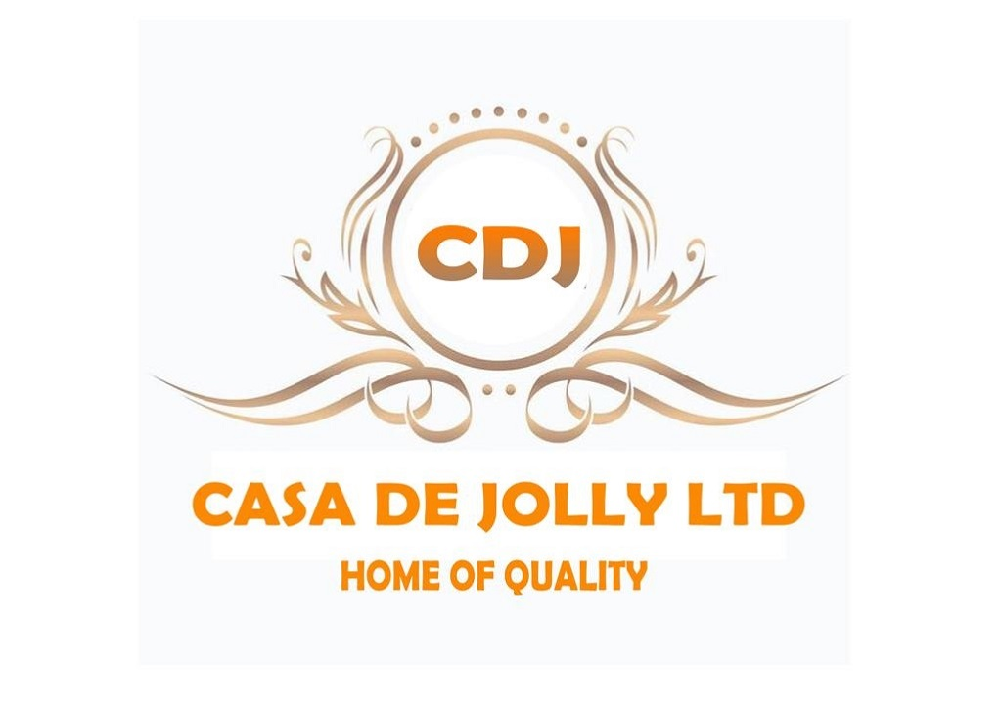
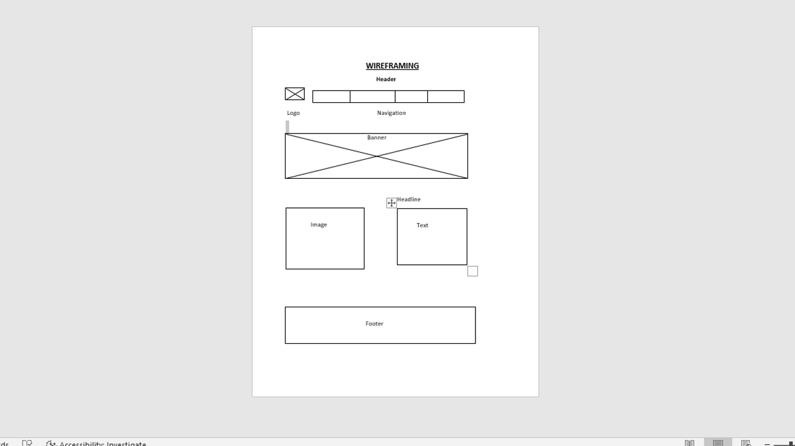

Overview
Purpose
Purpose: Extraction of palm oil from fresh organic palm fruit which will be processed into consumable red palm oil, and palm kernel oil and also manufactured into pomade, bathing soap, hair food, and moisturizer for natural hair. .
Audience
Audience: Our target is to create awareness among individuals, increase productivity as well as educate the public on its health benefit and why they should purchase the product for consumable and external purposes. It will be sold on the website, and mart, to individuals, wholesalers, retailers, and shops both locally, and internationally./p>
Branding
Website Logo
Style Guide
Color Palette
Palette URL:
>https://coolors.co/396e94-e7c24f-a43312-381d2a-aabd8c| Primary | Secondary | Accent 1 | Accent 2 |
|---|---|---|---|
| #04471C | #151E3F | #FF8427 | #151E3F |
Typography
Heading Font: unica one
Paragraph Font: Roboto
Normal paragraph example
Casa De Jolly Limited is a manufacturing company that is into the extraction of organic fresh palm fruit which is later processed into red palm oil, palm kernel oil, pomade, moisturizer, hair food, bathing, and washing soaps. All of these products are not just less expensive to be purchased by the public for consumable purposes and external uses but also it attractive packing, quality and healthy to be consumed by everyone irrespective of their forms.
It is low in cholesterol.
No additives and preservatives.
No side effects.
No expiring date since it does not expire.
No skin irritations and bad reactions.
Hair relaxer.
Skin nourisher.
It can be accessed easily.
It is vetted and approved by the Food and Drug Board Authority (FDA).
It comes with lots of health benefits such as replacing worn-out tissues, increasing sight or vision as well as boosting the immune system, moisturizing, and promoting relaxing skin.
This website creates awareness among the general public both existing and potential customers whereby purchasing become easy and simple without stress.
It indicates where these products can be found be it supermarkets or marts, malls, mini marts, and shops by individuals, retailers, wholesalers, and export and import agencies since it serves as platform for reaching out to our potential and existing customers.
People therefore comes to our website because it is genuine and authentic as well as reliable, it answers all questions asked by our potential and existing customers quickly with an ease and immediate effects. It has come to our notice that most visitors come to our site instead of another to get information because of its attractiveness,
Colored paragraph example
Trips vary from mild and great for families, to trips exclusively for physically fit and experienced rafters. No matter what type of river adventures you are seeking, White Water Rafting Company can make it happen for you.
Navigation
Site Map
Wireframes
Home